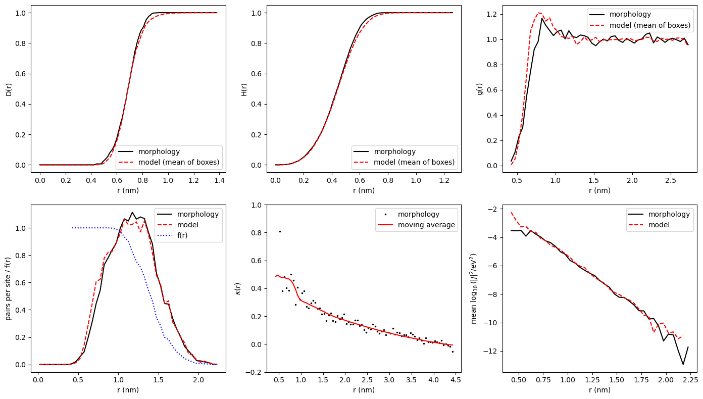
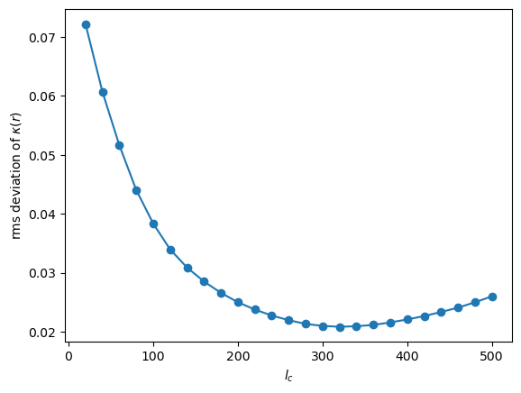
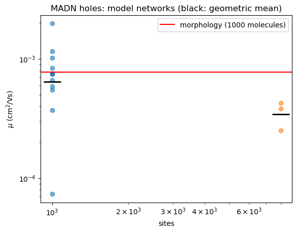
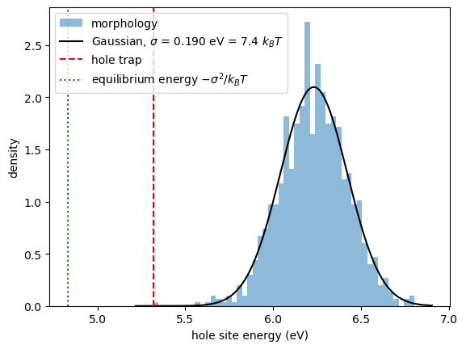
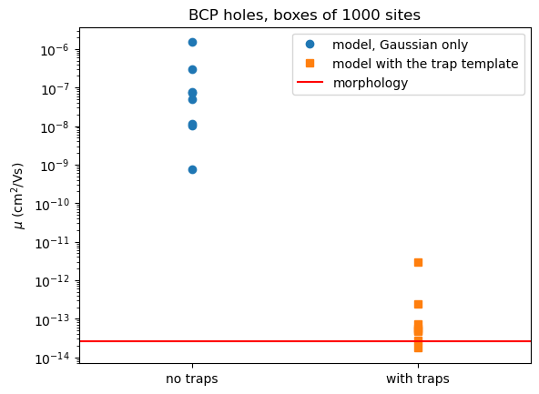
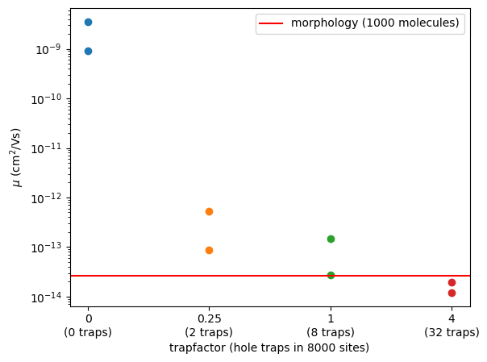

Larger systems with the stochastic network model¶
A morphology from molecular dynamics holds a few thousand molecules. For charge transport in a disordered material this is often far too small: a carrier in equilibrium sits in the low-energy tail of the density of states (DOS), and a small box samples that tail badly. The mobility of a small box then depends on its few deepest sites and changes by orders of magnitude from one box to the next.
The stochastic network model (Baumeier, Stenzel, Poelking, Andrienko, Schmidt, Phys. Rev. B 86, 184202 (2012)) is a random hopping network with the statistics of the morphology that can be generated at any size. This tutorial
fits the model to two morphologies of 1000 molecules with
networkfit: MADN (moderate disorder) and bathocuproine, BCP (strong disorder and a trap),checks the fit against the morphology, including the transport,
generates larger networks with
networkgenand follows the mobility with system size,looks at the trap in BCP and how much the result depends on the trap density,
shows why averaging over many small boxes does not replace a large one.
The theory is in the XTP manual, section Finite systems and the stochastic network model; the options in Transport Simulations.
Requirements¶
VOTCA installed and the environment activated with
VOTCARC.bash.Python with
numpyandmatplotlib.
The calculations take about 15 minutes in total. In Jupyter, ! runs a shell command.
[1]:
import glob
import gzip
import os
import shutil
import subprocess
import numpy as np
import matplotlib.pyplot as plt
kT = 8.617333e-5 * 300 # eV
def run(command):
# run a VOTCA command, return its output (raises if it fails)
p = subprocess.run(command, shell=True, check=True, capture_output=True, text=True)
return p.stdout
def results(filename):
# read a 'key value unit' result file into a dictionary
values = {}
with open(filename) as f:
for line in f:
if line.startswith("#") or not line.strip():
continue
key, value = line.split()[:2]
try:
values[key] = float(value)
except ValueError:
values[key] = value
return values
def show_log(log, first="Read "):
# print the log of a tool from the line starting with `first`, without the banner
lines = log.splitlines()
start = next(i for i, l in enumerate(lines) if first in l)
print("\n".join(l.replace("... ... ", "") for l in lines[start:] if l.strip() and l.strip() != "...."))
def mobility(statefile, carrier="hole", field=1e7):
# exact mobility (cm^2/Vs) of one carrier in a periodic box (kmcmultiple, master equation)
tag = os.path.splitext(statefile)[0] + "_" + carrier
run(f'xtp_run -e kmcmultiple -c carriertype={carrier} "field={field} 0 0" runtime=1000 outputtime=0 '
f'ratefile={tag}_rates.dat occfile={tag}_occ.dat resultfile={tag}.res -f {statefile}')
for f in (f"{tag}_rates.dat", f"{tag}_occ.dat"):
os.remove(f)
if os.path.basename(statefile).startswith("model_"):
os.remove(statefile) # model networks are large; keep the disk clean
return results(f"{tag}.res")["exact_mobility"]
def generate(parameters, name, sites=None, seed=1, trapfactor=1.0, energyfile=False):
# write a model network with networkgen; returns the state file name
if os.path.exists(name + ".hdf5"):
os.remove(name + ".hdf5")
options = f"job_name={name} parameters={parameters} seed={seed} trapfactor={trapfactor}"
if sites is not None:
options += f" sites={sites}"
if energyfile:
options += f" energyfile={name}_E.txt"
run(f"xtp_tools -e networkgen -c {options}")
return name + ".hdf5"
def stats_blocks(filename):
# the blocks of a networkfit statsfile: {title: array}
blocks = {}
for block in open(filename).read().split("\n\n\n"):
lines = [l for l in block.strip().splitlines()]
if len(lines) < 3:
continue
title = lines[0][2:]
blocks[title] = np.array([[float(x) for x in l.split()] for l in lines[2:]])
return blocks
# the morphologies are shipped compressed
for name in ("MADN", "BCP"):
with gzip.open(f"{name}.hdf5.gz", "rb") as fin, open(f"{name}.hdf5", "wb") as fout:
shutil.copyfileobj(fin, fout)
# networkgen does not overwrite state files: remove those of a previous run
for f in glob.glob("model_*.hdf5"):
os.remove(f)
The morphologies¶
Both state files contain 1000 molecules in a cubic box (MADN 8.8 nm, BCP 8.1 nm) with everything the transport calculators need: centers of mass, site energies (electrostatic and polarization contributions from polarizable force fields, plus internal energies), electronic couplings \(|J|^2\) for holes and electrons in a neighbor list, and reorganization energies. For MADN only the holes have site energies. To keep the files small, each molecule is represented by one pseudo atom at its center of mass.
Fitting the model to MADN¶
networkfit determines all parameters of the model:
the point process of the sites, from the nearest-neighbor distance distribution \(D(r)\), the spherical contact distribution \(H(r)\) and the pair correlation function \(g(r)\),
the site energies: mean, width \(\sigma\) and the spatial correlation \(\kappa(r)\), described by a moving average over the \(l_b\) and \(l_c\) nearest sites,
the connection probability \(f(r)\) of two sites at distance \(r\),
the couplings: mean and variance of \(\log_{10}|J|^2\) against \(r\) and the distribution of the residuals,
traps from the slow modes of the master equation,
for two carriers, the correlation of their site energies and couplings.
It then generates validate (4) model boxes of the same size and compares their statistics with the morphology. The fit of the point process takes about two minutes.
[2]:
log = run("xtp_tools -e networkfit -c job_name=MADN statefile=MADN.hdf5 'carriers=h e' "
"statsfile=MADN_stats.dat energyfile=MADN_E.txt")
show_log(log)
Read MADN.hdf5 frame 0: 1000 sites, 8764 pairs, box 8.80658 x 8.80658 x 8.80658 nm^3
Traps for h (slow modes of the master equation at 300 K): largest eigenvalue ratio 2.28 after 1 slow mode(s): no traps
Traps for e (slow modes of the master equation at 300 K): largest eigenvalue ratio 1.15 after 1 slow mode(s): no traps
Point process: r_h = 0.374102 nm, radius mean = 0.150445 nm, variance = 0.00803475 nm^2 (objective 0.00165453, 90 evaluations)
Connection probability tabulated up to 2.25 nm
Carrier h: site energies mean 5.54854 eV, sigma 0.0866746 eV (sample), 0.0945774 eV = 3.65842 kT (model, corrected for the finite system)
moving average w_a = 0.283967, w_b = 0.219236 (l_b = 4), w_c = 0.496797 (l_c = 320), rms of kappa 0.0208622, mean correlation over all pairs 0.160136
log10(J^2/eV^2) = -0.305017 + -5.10259 r/nm, variance 0.449331 + 1.51769 r/nm; residual skewness -0.813854, excess kurtosis 1.3627; 8764 couplings
lambda = 0.307031 eV (U_nX_nN 0.120751, U_xN_xX 0.18628), internal energy U_xX_nN 6.40378 eV
the density of occupied states at 300 K needs about 7.82e+07 sites
Carrier e: site energies mean -0.973816 eV, sigma 0 eV (sample), 0 eV = 0 kT (model, corrected for the finite system); no energy disorder (all site energies equal)
log10(J^2/eV^2) = -0.572674 + -4.54076 r/nm, variance 0.593436 + 1.43016 r/nm; residual skewness -0.613832, excess kurtosis 1.36039; 8764 couplings
lambda = 0.377785 eV (U_nX_nN 0.157541, U_xN_xX 0.220244), internal energy U_xX_nN -0.973816 eV
the density of occupied states at 300 K needs about 2.28e+02 sites
Correlation of the site energies of h and e: 0, of the coupling residuals: 0.499939
Wrote MADN_network.xml
Wrote MADN_E.txt
Validation: 4 model network(s) of 1000 sites (seeds 1 to 4), mean and standard deviation over the networks; 0 trap(s) inserted in total:
quantity microscopic model sd
pairs per site 17.53 17.91 0.1576
mean nearest neighbour distance (nm) 0.6833 0.6923 0.002636
sigma h (eV) 0.08667 0.08438 0.001866
mean log10(J^2/eV^2) h -6.373 -6.301 0.02827
sd log10(J^2/eV^2) h 2.128 2.139 0.005257
kappa h at 0.75 nm 0.3844 0.4496 0.08872
kappa h at 1.00 nm 0.319 0.2891 0.1051
kappa h at 1.50 nm 0.2155 0.2191 0.08526
kappa h at 2.00 nm 0.2145 0.1441 0.05248
sigma e (eV) 9.252e-15 0 0
mean log10(J^2/eV^2) e -5.973 -5.919 0.01626
sd log10(J^2/eV^2) e 2.024 2.027 0.006802
log10 D zero field h (m^2/s) -8.794 -8.719 0.1721
traps found h 0 0 0
log10 D zero field e (m^2/s) -7.022 -7.063 0.01399
traps found e 0 0 0
Wrote MADN_stats.dat
==============================================================================
Please cite the methods used in this run:
[1] Baumeier, Wehner, Renaud, Zapata Ruiz, Halver, Madhikar, Gerritsen, Tirimbo, Sijen, Rosenberger, Brown, Sundaram, Krajniak, Bernhardt, and Junghans, VOTCA: multiscale frameworks for quantum and classical simulations in soft matter, J. Open Source Softw. 9, 6864 (2024), doi:10.21105/joss.06864
[2] Baumeier, Stenzel, Poelking, Andrienko, and Schmidt, Stochastic modeling of molecular charge transport networks, Phys. Rev. B 86, 184202 (2012), doi:10.1103/PhysRevB.86.184202
[3] Kordt, Stenzel, Baumeier, Schmidt, and Andrienko, Parametrization of extended Gaussian disorder models from microscopic charge transport simulations, J. Chem. Theory Comput. 10, 2508 (2014), doi:10.1021/ct500269r
[4] Chen, van der Hoorn, and Baumeier, Automatic identification of traps in molecular charge transport networks of organic semiconductors, Phys. Rev. B 111, 224209 (2025), doi:10.1103/shyl-kcfp
==============================================================================
The model has no traps for MADN. The width of the hole DOS is about \(3.7\,k_BT\) (after correcting the sample value for the finite box, see the manual). The validation table compares the morphology with the model boxes: geometry, energies, couplings, the energy correlation at a few distances and the exact zero-field diffusion coefficient of one hole. The morphology lies within the spread of the model boxes.
The parameter file is plain XML and can be edited:
[3]:
print(open("MADN_network.xml").read())
<?xml version="1.0"?>
<!-- stochastic network model; lengths nm, energies eV, couplings log10(J^2/eV^2) with r in nm -->
<stochasticnetwork>
<sites>1000</sites>
<box>8.806579366 8.806579366 8.806579366</box>
<seed>1</seed>
<segmentname>site</segmentname>
<points>
<hardcore>0.374102362</hardcore>
<radiusmean>0.1504448321</radiusmean>
<radiusvariance>0.008034751324</radiusvariance>
<candidates>3</candidates>
<maxiterations>200</maxiterations>
</points>
<connection>
<r>0.0249999982 0.0749999946 0.124999991 0.1749999874 0.2249999838 0.2749999802 0.3249999766 0.374999973 0.4249999694 0.4749999658 0.5249999622 0.5749999586 0.624999955 0.6749999514 0.7249999478 0.7749999442 0.8249999406 0.874999937 0.9249999334 0.9749999298 1.024999926 1.074999923 1.124999919 1.174999915 1.224999912 1.274999908 1.324999905 1.374999901 1.424999897 1.474999894 1.52499989 1.574999887 1.624999883 1.674999879 1.724999876 1.774999872 1.824999869 1.874999865 1.924999861 1.974999858 2.024999854 2.074999851 2.124999847 2.174999844 2.22499984 2.249999838</r>
<p>1 1 1 1 1 1 1 1 1 1 1 1 1 1 1 1 1 1 0.9976247031 0.9888888889 0.9727095517 0.9350877193 0.8989726027 0.8215339233 0.7546099291 0.7124010554 0.6395209581 0.5413870246 0.4651898734 0.3446852425 0.284729064 0.199285076 0.1817434211 0.1335428123 0.09370529328 0.0685483871 0.04347826087 0.03107165504 0.01865889213 0.007900677201 0.007107709131 0.004573170732 0.003360537686 0.0004424778761 0.0004184100418 0</p>
</connection>
<energycorrelation>0</energycorrelation>
<couplingcorrelation>0.4999393332</couplingcorrelation>
<carrier>
<state>h</state>
<energy>
<mean>-0.855232802</mean>
<sigma>0.0945774285</sigma>
<w_a>0.2839667738</w_a>
<w_b>0.2192357483</w_b>
<l_b>4</l_b>
<l_c>320</l_c>
</energy>
<coupling>
<meanoffset>-0.3050167335</meanoffset>
<meanslope>-5.102594431</meanslope>
<varoffset>0.4493308662</varoffset>
<varslope>1.517685839</varslope>
<quantiles>-3.420121743 -2.637935168 -2.303488165 -2.093817843 -1.914211405 -1.806731319 -1.656580187 -1.534664686 -1.42529787 -1.331089531 -1.26618667 -1.182166496 -1.115826326 -1.058626816 -1.003037862 -0.9461941003 -0.8997000934 -0.8607168974 -0.8215968043 -0.7731326343 -0.7227289764 -0.6842595441 -0.6484713735 -0.6093153565 -0.5716427732 -0.5416754553 -0.5102307911 -0.4767094971 -0.4436469088 -0.4096935959 -0.3821298367 -0.3508875744 -0.3230685588 -0.2978219491 -0.2712625341 -0.2434024378 -0.2140584673 -0.1854267889 -0.1545693677 -0.1303622793 -0.102229902 -0.07865509707 -0.05644764608 -0.03181859111 0.0003354005276 0.02456304849 0.04606325258 0.06846111185 0.09208423877 0.1125874317 0.1366063245 0.1595519738 0.1852524914 0.2052686025 0.2286434498 0.256272584 0.2792270308 0.2990963419 0.3217181629 0.3434401665 0.3660460541 0.3871567998 0.4119165091 0.4357022876 0.4545999226 0.4767134975 0.4993714918 0.5204487183 0.5416988603 0.5638084629 0.5864318519 0.6124003791 0.6350906322 0.6566116618 0.6794067688 0.7021269771 0.7201191155 0.7467774661 0.7726600669 0.8014904574 0.8289215241 0.8598009326 0.8851296918 0.9127315122 0.9468718739 0.9772040102 1.002602816 1.033009739 1.060909165 1.095112443 1.142644063 1.202570084 1.244904916 1.303180664 1.369837251 1.436303458 1.514333396 1.618332274 1.779828203 2.068772324</quantiles>
</coupling>
<U_xX_nN>6.403777367</U_xX_nN>
<U_nX_nN>0.1207508793</U_nX_nN>
<U_xN_xX>0.1862802309</U_xN_xX>
</carrier>
<carrier>
<state>e</state>
<energy>
<mean>-7.363859902e-15</mean>
<sigma>0</sigma>
<w_a>1</w_a>
<w_b>0</w_b>
<l_b>1</l_b>
<l_c>1</l_c>
</energy>
<coupling>
<meanoffset>-0.5726738342</meanoffset>
<meanslope>-4.540762141</meanslope>
<varoffset>0.5934362375</varoffset>
<varslope>1.430155713</varslope>
<quantiles>-3.270761592 -2.518371092 -2.218640505 -2.012158393 -1.884803247 -1.724743304 -1.603330842 -1.484989195 -1.395995007 -1.309659636 -1.241890878 -1.175319334 -1.117877439 -1.045838033 -0.9936357149 -0.9484612026 -0.9097259413 -0.8588974351 -0.8166627038 -0.7760851797 -0.7328152898 -0.6885948595 -0.6519572111 -0.6148038296 -0.5837971669 -0.5476658273 -0.5091654728 -0.4820212455 -0.4492284434 -0.4160126412 -0.395611642 -0.3653803654 -0.3361533167 -0.311835723 -0.2799754546 -0.2550081101 -0.2305442382 -0.2056499708 -0.1811839018 -0.1602006343 -0.136578794 -0.1125979804 -0.08405545778 -0.06036556363 -0.0354347584 -0.01378947147 0.01184038673 0.03356875624 0.05769673729 0.0827590655 0.1073150747 0.128667251 0.1523652939 0.1713834994 0.1928778575 0.2122303152 0.2378098208 0.2587653249 0.2785546362 0.2979440231 0.3211192496 0.3424446173 0.3618077872 0.3848763938 0.4065152926 0.4273790559 0.4494480404 0.4698678366 0.4926235964 0.5174184384 0.5448283913 0.5673311892 0.591030109 0.6123844277 0.6313182528 0.6558802199 0.6798739168 0.7085168407 0.7342885342 0.770011529 0.7984282912 0.8321629095 0.8618212317 0.8954778055 0.9334699635 0.960833925 0.9993652533 1.0427388 1.086548629 1.137539015 1.196823113 1.246579621 1.304762626 1.387684571 1.443025147 1.538317982 1.654929243 1.798270573 1.99355875 2.346311823</quantiles>
</coupling>
<U_xX_nN>-0.9738158922</U_xX_nN>
<U_nX_nN>0.1575413626</U_nX_nN>
<U_xN_xX>0.2202440377</U_xN_xX>
</carrier>
</stochasticnetwork>
The fitted functions from the statsfile:
[4]:
b = stats_blocks("MADN_stats.dat")
fig, ax = plt.subplots(2, 3, figsize=(14, 8))
for a, key, ylabel in ((ax[0, 0], "nearest neighbour distance distribution D(r)", "D(r)"),
(ax[0, 1], "spherical contact distribution H(r)", "H(r)"),
(ax[0, 2], "pair correlation function g(r)", "g(r)")):
d = b[key]
a.plot(d[:, 0], d[:, 1], "k-", label="morphology")
a.plot(d[:, 0], d[:, 2], "r--", label="model (mean of boxes)")
a.set_xlabel("r (nm)"); a.set_ylabel(ylabel); a.legend()
d = b["pairs per site in distance bins"]
ax[1, 0].plot(d[:, 0], d[:, 1], "k-", label="morphology")
ax[1, 0].plot(d[:, 0], d[:, 2], "r--", label="model")
f = b["connection probability f(r)"]
ax[1, 0].plot(f[:, 0], f[:, 1], "b:", label="f(r)")
ax[1, 0].set_xlabel("r (nm)"); ax[1, 0].set_ylabel("pairs per site / f(r)"); ax[1, 0].legend()
d = b["energy correlation kappa(r), carrier h"]
ax[1, 1].plot(d[:, 0], d[:, 1], "k.", ms=3, label="morphology")
ax[1, 1].plot(d[:, 0], d[:, 2], "r-", label="moving average")
ax[1, 1].set_xlabel("r (nm)"); ax[1, 1].set_ylabel(r"$\kappa(r)$"); ax[1, 1].set_ylim(-0.2, 1.0); ax[1, 1].legend()
d = b["mean log10(J^2/eV^2), carrier h"]
ax[1, 2].plot(d[:, 0], d[:, 1], "k-", label="morphology")
ax[1, 2].plot(d[:, 0], d[:, 2], "r--", label="model")
ax[1, 2].set_xlabel("r (nm)"); ax[1, 2].set_ylabel(r"mean $\log_{10}(|J|^2/\mathrm{eV}^2)$"); ax[1, 2].legend()
plt.tight_layout()
plt.show()

The correlation of the site energies reaches far: the best long-range average uses \(l_c\approx 300\) sites, a third of the box. How well this range is determined shows the quality of the fit for every \(l_c\):
[5]:
scan = b["rms of the best kappa fit for each l_c, carrier h"]
plt.plot(scan[:, 0], scan[:, 1], "o-")
plt.xlabel("$l_c$")
plt.ylabel(r"rms deviation of $\kappa(r)$")
plt.show()

The minimum is shallow: correlations over distances comparable to the box are not well determined by a box of 1000 molecules.
Transport: morphology, model boxes, larger networks¶
We compare the exact mobility of one hole at \(10^7\) V/m (from the master equation, computed by kmcmultiple; no sampling noise) in the morphology with model boxes of the same size, and then with larger networks. Each model box is a new realization (seed).
[6]:
mu_madn = mobility("MADN.hdf5")
print(f"MADN morphology: {mu_madn:.3e} cm^2/Vs")
madn = {}
for n, seeds in ((1000, range(1, 13)), (8000, range(1, 4))):
madn[n] = [mobility(generate("MADN_network.xml", f"model_madn_{n}_{s}", sites=n, seed=s)) for s in seeds]
print(n, "sites:", " ".join(f"{m:.2e}" for m in madn[n]))
MADN morphology: 7.702e-04 cm^2/Vs
1000 sites: 3.72e-04 8.35e-04 1.02e-03 1.16e-03 7.45e-04 5.87e-04 7.51e-04 7.54e-04 1.97e-03 7.35e-05 6.59e-04 5.47e-04
8000 sites: 3.80e-04 2.51e-04 4.25e-04
[7]:
for n, values in madn.items():
plt.semilogy([n] * len(values), values, "o", alpha=0.6)
plt.semilogy(n, np.exp(np.mean(np.log(values))), "k_", ms=25, mew=2)
plt.axhline(mu_madn, color="r", label="morphology (1000 molecules)")
plt.xscale("log")
plt.xlabel("sites")
plt.ylabel(r"$\mu$ (cm$^2$/Vs)")
plt.legend()
plt.title("MADN holes: model networks (black: geometric mean)")
plt.show()

The morphology lies within the spread of the model boxes of the same size: the model reproduces its transport. The boxes of 1000 sites scatter by a factor of a few, single boxes by more than an order of magnitude; boxes of 8000 sites scatter less, and their mean is lower. Even 8000 sites are not converged: for \(\sigma\approx3.7\,k_BT\) the criterion of Baumeier et al., \((\sigma/k_BT)^2\le-5.7+1.05\ln N\), asks for about \(10^8\) sites. In a study one would continue to \(10^5\)–\(10^6\) sites (the exact solution takes minutes for \(10^5\) sites; beyond that, use the kinetic Monte Carlo results) and extrapolate.
BCP: strong disorder and a trap¶
BCP has a much broader DOS. The fit also looks for traps:
[8]:
log = run("xtp_tools -e networkfit -c job_name=BCP statefile=BCP.hdf5 'carriers=h e' "
"statsfile=BCP_stats.dat energyfile=BCP_E.txt")
show_log(log)
Read BCP.hdf5 frame 0: 1000 sites, 9040 pairs, box 8.1484 x 8.1484 x 8.1484 nm^3
Traps for h (slow modes of the master equation at 300 K): largest eigenvalue ratio 658 after 1 slow mode(s)
trap of 1 site(s): 66 (-0.913 eV)
equilibrium weight 1; release rate 0.000635 1/s, capture rate 2.67 1/s (slow mode 2.68 1/s); hops out 1.24e+03 1/s
Traps for e (slow modes of the master equation at 300 K): largest eigenvalue ratio 14.8 after 1 slow mode(s)
trap of 1 site(s): 922 (-0.768 eV)
equilibrium weight 0.998; release rate 79.1 1/s, capture rate 4.18e+04 1/s (slow mode 4.19e+04 1/s); hops out 1.84e+06 1/s
Point process: r_h = 0.323292 nm, radius mean = 0.149429 nm, variance = 0.00928965 nm^2 (objective 0.00357693, 89 evaluations)
Connection probability tabulated up to 1.9 nm
Carrier h: site energies mean 6.23058 eV, sigma 0.190251 eV (sample), 0.193911 eV = 7.50081 kT (model, corrected for the finite system)
moving average w_a = 0.278266, w_b = 0.450593 (l_b = 10), w_c = 0.271141 (l_c = 120), rms of kappa 0.0181197, mean correlation over all pairs 0.0373959
log10(J^2/eV^2) = -1.13814 + -4.81721 r/nm, variance 0.555497 + 2.09411 r/nm; residual skewness -0.532485, excess kurtosis 0.541252; 9040 couplings
lambda = 0.493971 eV (U_nX_nN 0.252321, U_xN_xX 0.241649), internal energy U_xX_nN 7.20386 eV
the density of occupied states at 300 K needs about 4.25e+25 sites
Carrier e: site energies mean -0.670845 eV, sigma 0.1956 eV (sample), 0.200109 eV = 7.74056 kT (model, corrected for the finite system)
moving average w_a = 0.251142, w_b = 0.545231 (l_b = 2), w_c = 0.203626 (l_c = 360), rms of kappa 0.0172329, mean correlation over all pairs 0.044557
log10(J^2/eV^2) = -1.04847 + -4.66106 r/nm, variance 0.500034 + 1.75677 r/nm; residual skewness -0.620295, excess kurtosis 0.911702; 9040 couplings
lambda = 0.5702 eV (U_nX_nN 0.290565, U_xN_xX 0.279635), internal energy U_xX_nN -0.194843 eV
the density of occupied states at 300 K needs about 1.38e+27 sites
Correlation of the site energies of h and e: -0.899183, of the coupling residuals: 0.569213
Wrote BCP_network.xml
Wrote BCP_E.txt
Validation: 4 model network(s) of 1000 sites (seeds 1 to 4), mean and standard deviation over the networks; 8 trap(s) inserted in total:
quantity microscopic model sd
pairs per site 18.08 18.52 0.08562
mean nearest neighbour distance (nm) 0.6264 0.634 0.003033
sigma h (eV) 0.1923 0.1918 0.004267
mean log10(J^2/eV^2) h -6.434 -6.366 0.01519
sd log10(J^2/eV^2) h 2.106 2.138 0.001556
kappa h at 0.75 nm 0.4619 0.4259 0.08725
kappa h at 1.00 nm 0.3663 0.3462 0.05554
kappa h at 1.50 nm 0.1754 0.1949 0.0451
kappa h at 2.00 nm 0.0822 0.09835 0.05064
sigma e (eV) 0.1985 0.1977 0.005532
mean log10(J^2/eV^2) e -6.173 -6.115 0.02196
sd log10(J^2/eV^2) e 1.977 2.004 0.02672
kappa e at 0.75 nm 0.4583 0.3775 0.088
kappa e at 1.00 nm 0.3233 0.3147 0.06236
kappa e at 1.50 nm 0.1624 0.1917 0.06001
kappa e at 2.00 nm 0.08519 0.1017 0.06399
site energy correlation -0.8966 -0.9041 0.01014
log10 D zero field h (m^2/s) -19.03 -18.72 0.4978
traps found h 1 1.5 0.866
log10 D zero field e (m^2/s) -16 -16.33 1.752
traps found e 1 1.25 0.433
Wrote BCP_stats.dat
==============================================================================
Please cite the methods used in this run:
[1] Baumeier, Wehner, Renaud, Zapata Ruiz, Halver, Madhikar, Gerritsen, Tirimbo, Sijen, Rosenberger, Brown, Sundaram, Krajniak, Bernhardt, and Junghans, VOTCA: multiscale frameworks for quantum and classical simulations in soft matter, J. Open Source Softw. 9, 6864 (2024), doi:10.21105/joss.06864
[2] Baumeier, Stenzel, Poelking, Andrienko, and Schmidt, Stochastic modeling of molecular charge transport networks, Phys. Rev. B 86, 184202 (2012), doi:10.1103/PhysRevB.86.184202
[3] Kordt, Stenzel, Baumeier, Schmidt, and Andrienko, Parametrization of extended Gaussian disorder models from microscopic charge transport simulations, J. Chem. Theory Comput. 10, 2508 (2014), doi:10.1021/ct500269r
[4] Chen, van der Hoorn, and Baumeier, Automatic identification of traps in molecular charge transport networks of organic semiconductors, Phys. Rev. B 111, 224209 (2025), doi:10.1103/shyl-kcfp
==============================================================================
For holes networkfit finds a single-molecule trap: one molecule 0.9 eV below the mean holds practically all of the equilibrium weight. A hole leaves it at a rate of about \(10^{-3}\) s\(^{-1}\), although it hops out at about \(10^3\) s\(^{-1}\): almost every hop out is followed by a hop back. For electrons there is a trap, too. The trap is far outside the Gaussian DOS of the rest of the morphology:
[9]:
E = np.loadtxt("BCP_E.txt") # id, x, y, z, E_h, E_e, hole trap, electron trap
eh, trap = E[:, 4], E[:, 6]
bulk = eh[trap == 0]
x = np.linspace(eh.min() - 0.1, eh.max() + 0.1, 300)
plt.hist(eh, bins=50, density=True, alpha=0.5, label="morphology")
plt.plot(x, np.exp(-(x - bulk.mean())**2 / (2 * bulk.std()**2)) / np.sqrt(2 * np.pi) / bulk.std(), "k-",
label=f"Gaussian, $\\sigma$ = {bulk.std():.3f} eV = {bulk.std() / kT:.1f} $k_BT$")
for e in eh[trap == 1]:
plt.axvline(e, color="r", ls="--", label="hole trap")
plt.axvline(bulk.mean() - bulk.std()**2 / kT, color="g", ls=":", label=r"equilibrium energy $-\sigma^2/k_BT$")
plt.xlabel("hole site energy (eV)")
plt.ylabel("density")
plt.legend()
plt.show()
s = bulk.std() / kT
print(f"sigma/kT = {s:.2f}; sites needed by the criterion: {np.exp((s**2 + 5.7) / 1.05):.1e}")

sigma/kT = 7.36; sites needed by the criterion: 5.6e+24
In an infinite Gaussian DOS of this width a hole would sit around \(-\sigma^2/k_BT\), far below every site of the box. With \(\sigma/k_BT\approx7.5\) the criterion asks for about \(10^{25}\) sites, which no simulation reaches.
The trap is stored as a template in the parameter file (its energies for both carriers relative to the bulk mean) with the density of the morphology, one per 1000 sites; networkgen inserts it at random places. How much does it matter?
[10]:
mu_bcp = mobility("BCP.hdf5")
print(f"BCP morphology: {mu_bcp:.3e} cm^2/Vs")
bcp_traps = [mobility(generate("BCP_network.xml", f"model_bcp_t{s}", seed=s)) for s in range(1, 9)]
bcp_plain = [mobility(generate("BCP_network.xml", f"model_bcp_p{s}", seed=s, trapfactor=0)) for s in range(1, 9)]
print("without traps:", " ".join(f"{m:.1e}" for m in bcp_plain))
print("with traps: ", " ".join(f"{m:.1e}" for m in bcp_traps))
plt.semilogy([1] * 8, bcp_plain, "o", label="model, Gaussian only")
plt.semilogy([2] * 8, bcp_traps, "s", label="model with the trap template")
plt.axhline(mu_bcp, color="r", label="morphology")
plt.xticks([1, 2], ["no traps", "with traps"])
plt.xlim(0.5, 2.5)
plt.ylabel(r"$\mu$ (cm$^2$/Vs)")
plt.title("BCP holes, boxes of 1000 sites")
plt.legend()
plt.show()
BCP morphology: 2.664e-14 cm^2/Vs
without traps: 1.0e-08 1.5e-06 5.1e-08 3.0e-07 1.1e-08 7.3e-08 7.8e-08 7.7e-10
with traps: 7.1e-14 2.9e-12 5.1e-14 5.6e-14 2.4e-13 2.7e-14 4.7e-14 1.7e-14

Without the trap the model boxes are four to eight orders of magnitude faster than the morphology; with one trap per box most come within a factor of a few (the trap template is the same, its surroundings differ). A Gaussian model alone cannot describe BCP.
The trap density, however, is the least certain parameter: one trap in 1000 molecules fixes it only to between 0.025 and 5.6 times \(10^{-3}\) per site (95 % Poisson interval). trapfactor multiplies the density; a scan with networks of 8000 sites:
[11]:
factors = [0, 0.25, 1, 4]
scan = {f: [mobility(generate("BCP_network.xml", f"model_bcp8k_{f}_{s}", sites=8000, seed=s, trapfactor=f))
for s in (1, 2)] for f in factors}
for i, f in enumerate(factors):
plt.semilogy([i] * 2, scan[f], "o")
plt.axhline(mu_bcp, color="r", label="morphology (1000 molecules)")
plt.xticks(range(len(factors)), [f"{f}\n({int(f * 8)} traps)" for f in factors])
plt.xlabel("trapfactor (hole traps in 8000 sites)")
plt.ylabel(r"$\mu$ (cm$^2$/Vs)")
plt.legend()
plt.show()

The mobility is set by the trap density over many orders of magnitude. A prediction for BCP therefore needs the trap density from a larger or independent source (more morphologies, or the chemistry of the trap); the model makes this dependence explicit instead of hiding it in one box.
Many small boxes are not one large box¶
With such broad distributions it is tempting to average over many small boxes. We generate 24 boxes of 1000 sites and 4 of 8000 sites of the Gaussian BCP model (no traps; two of the large ones are reused from the scan above) and compare averages of groups of 8 small boxes with the large boxes:
[12]:
small, lnZ = [], []
for s in range(1, 25):
state = generate("BCP_network.xml", f"model_bcp_small_{s}", seed=100 + s, trapfactor=0, energyfile=True)
small.append(mobility(state))
x = -np.loadtxt(f"model_bcp_small_{s}_E.txt")[:, 4] / kT # hole energies
lnZ.append(x.max() + np.log(np.exp(x - x.max()).sum())) # ln of the Boltzmann sum
small, lnZ = np.array(small), np.array(lnZ)
large = scan[0] + [mobility(generate("BCP_network.xml", f"model_bcp8k_0_{s}", sites=8000, seed=s, trapfactor=0))
for s in (3, 4)]
rng = np.random.default_rng(1)
means = {"arithmetic": [], "geometric": [], "harmonic": [], "Boltzmann-weighted": []}
for _ in range(5000):
k = rng.choice(len(small), 8, replace=False)
w = np.exp(lnZ[k] - lnZ[k].max())
means["arithmetic"].append(np.log10(small[k].mean()))
means["geometric"].append(np.log10(small[k]).mean())
means["harmonic"].append(np.log10(8 / np.sum(1 / small[k])))
means["Boltzmann-weighted"].append(np.log10((w * small[k]).sum() / w.sum()))
print("log10 mobility (cm^2/Vs), mean +- standard deviation")
print(f" single boxes of 1000 sites {np.log10(small).mean():6.2f} +- {np.log10(small).std():.2f}")
print(f" boxes of 8000 sites {np.log10(large).mean():6.2f} +- {np.log10(large).std():.2f}")
for key, v in means.items():
print(f" {key:19s} of 8 small {np.mean(v):6.2f} +- {np.std(v):.2f}")
log10 mobility (cm^2/Vs), mean +- standard deviation
single boxes of 1000 sites -7.93 +- 1.18
boxes of 8000 sites -8.67 +- 0.65
arithmetic of 8 small -7.12 +- 0.40
geometric of 8 small -7.93 +- 0.35
harmonic of 8 small -9.21 +- 0.74
Boltzmann-weighted of 8 small -8.83 +- 0.66
The mobilities of the small boxes spread over orders of magnitude, and their plain means do not agree with the large boxes: the arithmetic mean is dominated by rare fast boxes, the harmonic mean by rare slow ones, and the geometric mean describes a typical box, which is not what a large system does.
The reason is the equilibrium of a single carrier. In a large system made of sub-boxes \(k\) the carrier is found in sub-box \(k\) with the probability \(P_k = Z_k/\sum_l Z_l\), with the Boltzmann sum \(Z_k=\sum_{A\in k}e^{-E_A/k_BT}\), and the drift velocity is \(\mathbf v=\sum_k P_k\mathbf v_k\). If the sub-boxes behave as isolated boxes, the mobility of the large system is the Boltzmann-weighted mean \(\sum_k Z_k\mu_k/\sum_k Z_k\), which agrees with the boxes of 8000 sites much better. It is still an approximation: carriers also leave a deep region across the boundaries of a sub-box, which isolated boxes do not have.
For a Gaussian DOS, \(Z/N\) fluctuates from box to box unless \(N\gg e^{(\sigma/k_BT)^2}\). Below that, \(Z\) is dominated by the deepest site of the box, and so is the mobility. Many realizations of small boxes are therefore, at best, one larger box in pieces: they do not converge to the mobility of a large system. Converged values need large enough networks, or an extrapolation in size or temperature (Kordt et al., J. Chem. Theory Comput. 10, 2508 (2014)).
Summary¶
networkfitturns a morphology into a stochastic network model; check the validation table, the fitted functions and the transport of model boxes of the same size.networkgengenerates networks of any size; follow the mobility with size until it stops changing, using several realizations per size.For broad DOS, finite boxes are dominated by their deepest sites; plain averages over many small boxes are biased.
Traps found in the morphology are inserted as templates; their density is uncertain and should be scanned with
trapfactor.